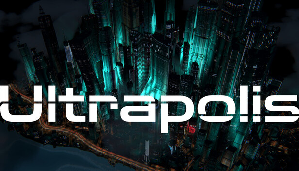
ULTRAPOLIS
A cyberpunk city diorama with millions of possible buildings. No city management between you and pure layout and design.
Download the press kitZIP · 87 MBEverything here is free to use in coverage of Ultrapolis. Click any image for the full-size file.
Factsheet
| Title | Ultrapolis |
| Developer and publisher | mflux |
| Platform | Windows (Steam) |
| Release date | To be announced |
| Genre | City diorama, sandbox |
| Steam | Wishlist on Steam |
| Contact | flux.blackcat@gmail.com |
| X | @mflux |
| @procedurallygenerated | |
| TikTok | @mfluxcreations |
| YouTube | @mflux |
About the game
Ultrapolis is a city diorama game inspired by the cityscapes of 90s anime such as Ghost in the Shell and Akira.
The city is your paintbrush
"Densify" a region and buildings rise, with streets appearing automatically to form a layout. Push it further and towers begin to form.
Millions of possibilities
Each and every building is procedurally generated and unique to the space it is given. Architecture reacts to the surrounding infrastructure.
- Sky bridges form between buildings on their own.
- Pushed to the limit, buildings combine into superstructures.
Place the infrastructure
- Elevated highways carve canyons through the dense urban jungle.
- Rail lines bore holes directly through skyscrapers.
- Wide boulevards, canals, and raised decks that lift a whole district to give you a terrace to paint on.
Videos
1920x1080, 64 s · 43 MB · download
1080x1920, 31 s · 17 MB · download
1080x1920, 32 s · 17 MB · download
Gameplay

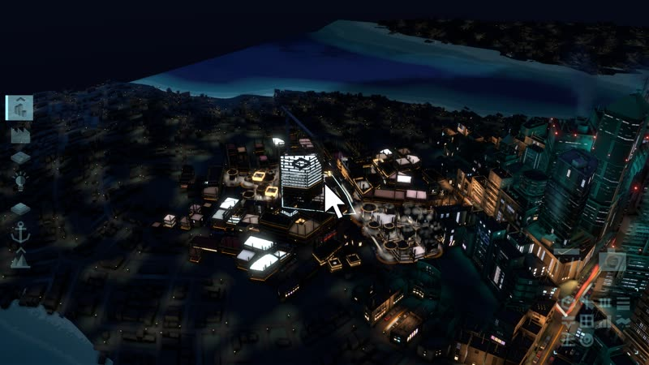
Painting density: a block rises under the brush
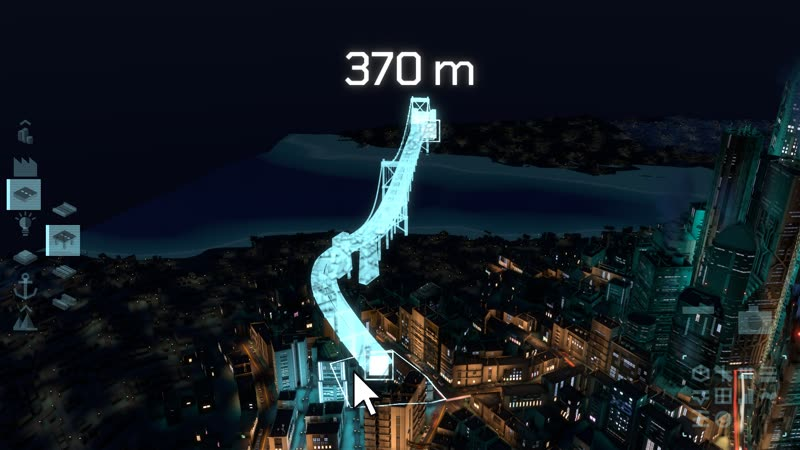
Drawing a highway: the bridge previews across the water
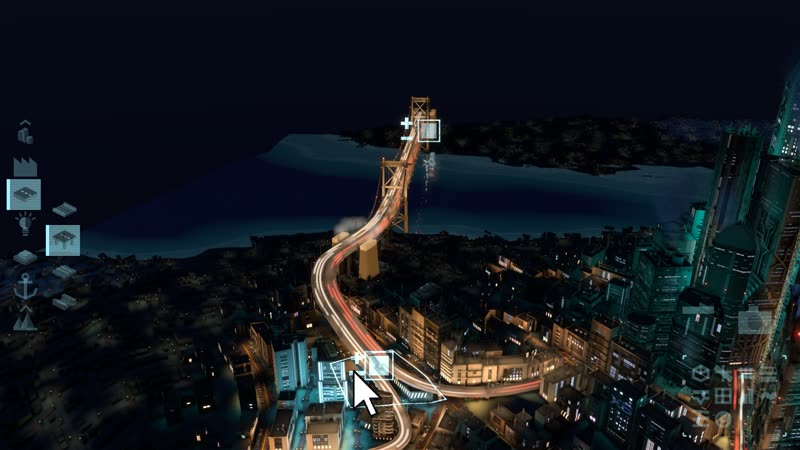
The highway built, with traffic
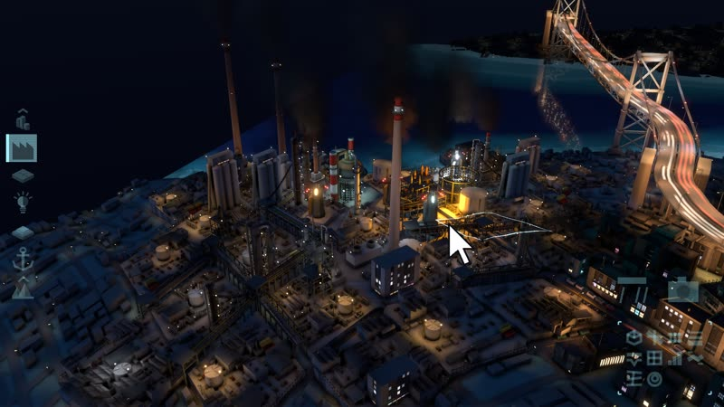
An industrial district beside the bridgeCity views

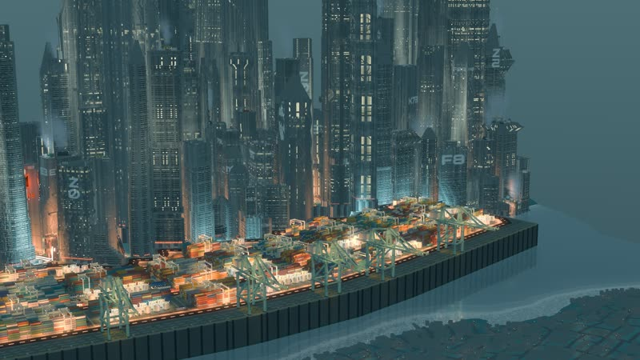
A container port below the skyline
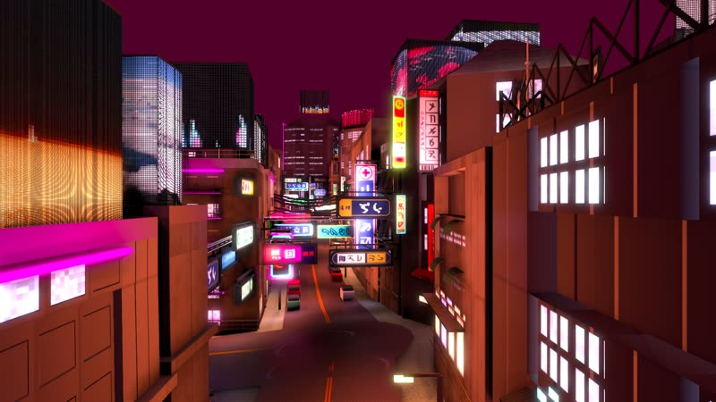
A street of signs in the fictional script
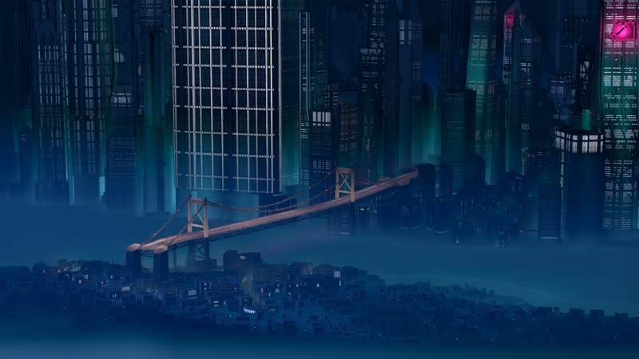
A suspension bridge joins two districts
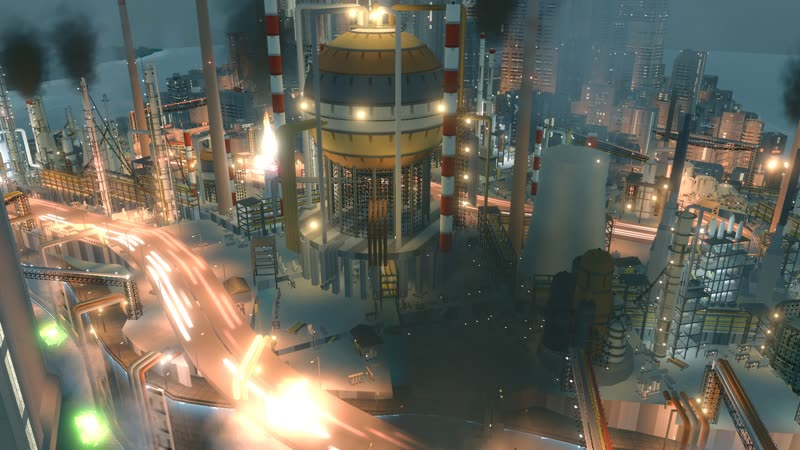
A refinery and an elevated highway
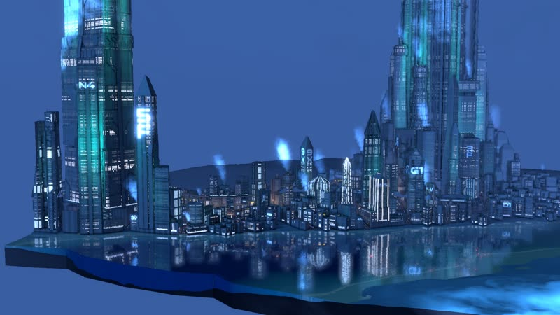
Superstructures over the riverfront
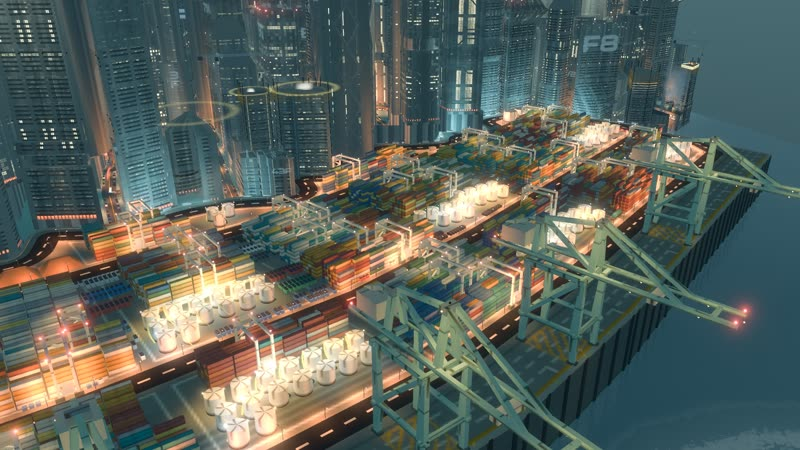
Cranes over the container portVertical
1080x1920, for stories and carousels: the same city under five of the game's colour looks.